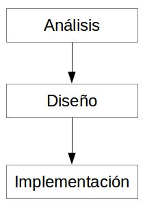
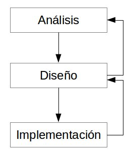

UML
Introducción
UML (Unified Modelling Language) consiste en un lenguaje que permite documentar, modelar y establecer cualquiera de los elementos que conforman un sistema orientado a objetos.
Antes de la existencia de UML, existían distintos métodos y técnicas de orientación a objetos, enfoques variados, muchos problemas de aprendizaje y uso de herramientas, y se carecía de estándares únicos.
Combina las metodologías de orientación a objetos de Booch, Rumbaugh y Jacobson.
En enero de 1997, se crea la primera versión adoptada como un estándar por el OMG (Object Management Group). Posteriormente, se desarrollaron diversas versiones, y en la actualidad se sigue revisando el estándar.
Según el OMG: Unified Modelling Language (UML) es un lenguaje para específicar, visualizar, construir y documentar los elementos de los sistemas software, así como los modelos de negocio y otros sistemas no software.
UML cubre las áreas principales que existen a la hora de crear una aplicación orientada a objetos, porque aglutina los principales enfoques de orientación a objetos.
Un problema de UML es su falta de integración con otras técnicas como los patrones de diseño o las interfaces de usuario.
Además, es importante destacar que UML es un lenguaje y no una metodología, por lo que necesita de un proceso de desarrollo, como puede ser RUP (Rational Unified Process) que combina los diagramas de UML con una serie de fases para su realización de un desarrollo software.
El éxito de UML, y su aceptación por un amplio procentaje de la industria, se debe a tres motivos principales:
- El prestigio de sus tres creadores (Rumbaugh, Jacobson y Booch)
- La lista de potentes empresas que han respaldado UML desde sus inicios.
- La incorpación en un único modelo de las principales ventajas de tres metodologías: OMT, Booch y OOSE.
Metodologías orientadas a objetos
Dentro del campo de la Ingeniería de Software, una metodología está relacionado con un proceso lógico y ordenado que permite producir un programa o software informático.
Cada metodología incluye sus propias reglas, técnicas y notaciones predefinidas. Por lo general aportan un algoritmo (conjunto de pasos ordenados) que debe completarse de forma secuencial para conseguir los objetivos. Los ciclos de vida marcan esta secuencialidad.
Dentro de los diversos paradigmas del mundo de la informática, el paradigma orientado a objetos consiste en una serie de normas para abordar los problemas. Su base es el mundo real y el concepto es el objeto, que combina estructura de datos y comportamiento en una sola entidad.
Object Modelling Technique
OMT o Técnica de Modelado de Objetos consiste en una metodología de Ingeniería de Software para el desarrollo de aplicaciones tomando como paradigma de partida la orientación a objetos. James Rumbaugh es uno de sus autores principales y destacan tres modelos:
- Modelo de objetos: Contempla aspectos estáticos y proporciona información sobre la estructura de los objetos. Especifíca "a qué le sucede". Consiste en un diagrama de objetos más un diccionario de datos. El diagrama de objetos muestra las clases y sus relaciones (generalización, agregación, asociación e instancia), mientras que el diccionario de datos representa el detalle de las clases en el diagrama de objetos.
- Modelo dinámico: Conjunto de diagramas de estado más un diagrama de flujo de eventos global. Especifíca "cuándo sucede".
- Modelo funcional: Es un diagrama de flujo con restricciones. Especifíca "lo que sucede"
Dentro de esta metodología existen tres fases:
- Análisis: En esta fase se obtiene un modelo preciso, conciso, comprensivo y correcto del mundo real; es decir, se comprende el sistema, se elabora un modelo de resolución y se determina el dominio. En esta fase se obtiene la captura de requisitos. La fase está marcada por tres aspectos: los objetos y sus relaciones, el flujo dinámico de control y las transformaciones funcionales.
- Diseño del sistema: Pretende mostrar la arquitectura del sistema: división del sistema en subsistemas, concurrencia, comunicación de subsistemas y almacenamiento de datos.
- Diseño de objetos: Pretende refinar y detallar el modelo de análisis, de forma que se pueda construir un modelo que sea cercano a la máquina. El resultado final de esta fase es el documento de diseño, el cual contiene versiones más detalladas de los modelos construidos en el análisis.
Object Oriented Design Booch
El método Booch destaca por sus diagramas, que se utilizan para describir las decisiones de análisis y diseño durante la creación de un sistema orientado a objetos.
- Diagrama de Clases: Consisten en un conjunto de clases y relaciones entre ellas. Puede contener clases, utilidades, clases paramétricas y metaclases. Los tipos de relaciones son asociaciones, herencia, instancia, contenencia, uso y metaclase.
- Especificación de Clases: Usado para capturar toda la información importante acerca de una clase en formato texto.
- Diagrama de Categorías: Clases agrupadas de forma lógica bajo diversas categorías.
- Diagrama de Transición de Estados: Muestra el comportamiento dinámico del sistema.
- Diagrama de Objetos: Muestra objetos en el sistema y su relación lógica. Pueden ser diagramas de escenario, en los cuales se manifiesta la colaboración entre objetos, o diagramas de instancia, que muestran la existencia de los objetos y sus relaciones estructurales entre ellos.
- Diagrama de Tiempo: Aumenta el diagrama de objetos con información acerca de eventos externos y tiempod e llegada de los mensajes.
- Diagrama de Módulos: Muestra la localización de objetos y clases en los módulos del diseño físico de un sistema. Representa parte o la totalidad de la arquitectura de módulos del sistema.
- Subsistemas: Un subsistema es una agrupación de módulos. Es útil en modelos de gran escala.
- Diagrama de Procesos: Muestra la localización de los procesos en los distintos procesos de un ambiente distribuido.
Dentro de esta metodología se encuentran tres fases:
- Análisis de requerimientos: Involucra las funciones primarias del sistema: principales entradas y salidas del sistema, referencias a políticas, sistemas existentes o procedimientos, etc. Además de los mecanismos claves que el sistema debe proveer: estado de entrada, estado de salida y estados esperados.
- Análisis de dominio.
- Diseño.
Ciclo de vida de un sistema
El ciclo de vida propone un patrón con una serie de pasos y la optimización del resultado final. Adicionalmente, el ciclo de vida indica la forma y la estructuración de los pasos que se dan para realizar un determinado desarrollo software. Estos tres pasos son:
- Análisis. ¿Qué se hace?
- Diseño. ¿Cómo se hace?
- Implementación. Programar el sistema
Ciclo de vida en cascada
El ciclo de vida en cascada es apto para problemas con requisitos bien definidos. Requiere de experiencia en el grupo de desarrollo y conocimientos del entorno y herramientas.
Se caracteriza porque cada una de las etapas lleva a otra. Y pueden ser:
- Ciclo de vida en Cascada Tradicional: Cada etapa necesita finalizarse para pasar a la siguiente. Nunca se vuelve hacia atrás.

- Ciclo de vida en Cascada con Mejora Iterativa: A diferencia de la cascada tradicional, es posible una realimentación para revisar la etapa anterior.

Ciclo de vida Prototipado
Se construye un prototipo que sirva como referencia para validad el producto. Existen dos tipos:
- Desechable: El prototipo se crea a partir de las partes peor definidas y se desecha una vez cumple su función. Es apto cuando la definición del problema no es clara y es poco volátil.

- Evolutivo: Apto para problemas mal definidos. Se utiliza un sistema experto en el cual los conocimientos van surgiendo y las necesidades se van incorporando. Reduce el riesgo y aumenta la probabilidad de éxito. Se obtienen versiones rápidas del sistema y el ejemplo más concreto lo constituyen las interfaces de usuario.
Ciclo de vida Incremental
Este ciclo es apto para problemas medianamente definidos. Suele utilizarse en grandes proyectos.
Se realiza un ciclo completo (análisis, diseño e implementación), se presenta una versión y con los comentarios obtenidos se realiza un nuevo ciclo para dar una segunda versión.
Principales Diagramas
UML propone diferentes diagramas para cubrir gran parte de las áreas de un proceso informático; sin embargo, algunos diagramas no pueden clasificarse de forma concreta dentro del análisis o dentro del diseño ya que seuelen ser versátiles y pueden trabajar en distintas fases.
Un diagrama es una perspectiva concreta de una parte de un sistema y su respectiva funcionalidad. Describe lo que hace un sistema pero no cómo se va a implementar.
Los principales diagramas existentes son:
- Diagrama de Estructura Estática: engloba el Modelo Conceptual y el Diagrama de Clases.
- Diagrama de Objetos
- Diagrama de Casos de Uso
- Diagrama de Interacción: engloba el Diagrama de Secuencia y el Diagrama de Colaboración.
- Diagrama de Estados
- Diagrama de Componentes
- Diagrama de Distribución
- Diagrama de Actividad
En la versión 2.0, se han diseñado nuevos diagramas como por ejemplo el Diagrama de Tiempos. Así mismo, el Diagrama de Colaboraciones pasó a llamarse Diagrama de Comunicaciones.
Ejemplo UML
- Detalles:
- Nombre del Juego: Dardos
- Objetivos: Conseguir más puntos que el rival
- Desarrollo:
- Cada jugador dispondrá de tres dardos y otras tantas tiradas.
- El jugador lanzará los 3 dardos de forma consecutiva contra la diana.
- La zona de impacto proporcionará una puntuación.
- El resultado será la media de los tres lanzamientos
- Hay que prever que alguno de los dardos pueda disponer de algún modificador (por ejemplo el segundo dardo vale el doble)
- Diagrama de Casos de Uso:
- Este diagrama es una descripción textual (y aveces gráfica) de las distintas acciones que el sistema va a realizar. Constituye una fase muy importante del análisis porque permite pasar de los requisitos que debe cumplir el sistema a una definición más formalizada y concreta de lo que realmente quiere hacerse.
- En el ejemplo, la única acción importante es lanzar el dardo (3 dardos concretamente)
-
- Modelo Conceptual:
- Con este modelo se intenta descubir los conceptos principales, los atributos de los que dispone cada uno y cómo se relacionan entre sí.
- El modelo conceptual es una estructura estática, y modela los elementos del dominio.
- No es una descripción de los objetos del software
- En el ejemplo, el modelo conceptual sería:
-
- Los conceptos importantes son: Jugador, Dardo y Diana.
- Las relaciones entre los conceptos son:
- El Jugador lanza el Dardo.
- El Jugador juega a la Diana.
- El Dardo impacta contra la Diana.
- Los atributos o características de los conceptos son:
- El Jugador tiene como rasgo principal su identificación (nombre).
- La Diana tiene valores (puntuaciones).
- Cada Dardo tiene un orden ya que el enunciado comenta que el orden puede influir en la puntuación.
- Diagrama de Secuencia:
- En el grupo de Diagramas de Interacción se encunetran los Diagramas de Secuencia. Este diagrama proporciona un gráfico con la secuencia ordenada de los pasos dados y eventos.
- El diagrama emplea unas líneas verticales para indicar el origen del mensaje (el evento ocurrido) y el destino.
- Debe ser parecdo a un caso real. Si se leen de arriba a abajo los disntinos eventos que figuran encima de cada línea horizontal, se descubre una lectura detallada de todo el proceso.
- En el ejemplo:
- Mediante el mensaje Jugar se inicia el juego.
- Desde la Diana se envía el mensaje Lanzar() al dardo d1.
- El dardo d1 responde a la Diana con el mensaje Impactar().
- Para calcular el valor, la Diana envía el menasje Dar_Valor al área (se asume una simulación de las áreas existentes en las dianas reales). En ese mensaje se incluye la posición de impacto del dardo mediante las coordenadas PosX y PosY.
- Este proceso se repite para los tres dardos.
- Este proceso se repite para los tres dardos
- Se están obviando otras funcionalidades (suma de los tres dardos, puntación acumulada, etc.)
- Diagrama de Clases:
- Describe las clases y elementos del sistema. Es un complemento indispensable de los diagramas de itneracción. Cualquier pieza que aparezca en el Diagrama de Secuencia debe aparecer en el Diagrama de Clases.
- Este diagrama presenta elementos de la solución software. Al realizarse en la fase de Diseño es un modelo válido para que el programador pueda implementarlo.
- A diferencia del Modelo Conceptual, no se presentan objetos del mundo real. El diagrama presenta elementos informáticos. Se trabaja con clases.
- Para el ejemplo:
- Existe un mensaje Lanzar desde el objeto Diana a cada Dardo. Significa que la clase Dardo incluye ese método.
- Existe un mensaje Impactar desde cada objeto Dardo a cada Diana. Significa que la clase Diana incluye ese método.
- Existe un mensaje Dar_Valor desde el objeto Diana al objeto área. Significa que la clase Áreas incluye ese método.
- Además, se incluyen una serie de atributos (características) dentro de cada clase en base a los parámetros empleados.
-
Diagramas de Estructura Estática
Introducción
Se engloba dos tipos de diagramas:
- Modelo Conceptual: Utilizado en fase de análisis, modela los elementos del dominio.
- Diagrama de Clases: Utilizado en fase de diseño, queda ligado a la solución software y emplea elementos del lenguaje de programación.
Conceptualmente, estos diagramas son distintos pero ambos comparten una notación parecida en los elementos que conforman el sistema, es decir, las clases, los objetos y las relaciones existentes entre ellos.
Modelo conceptual
El Modelo conceptual es un diagrama que representa un modelo de los elementos del dominio.
Una parte importante para delimitar el dominio del problema es la identificación y posterior tratamientos de los conceptos que lo conforman. Estos conceptos representan elementos del mundo real, no componentes software.
Su objetivo es el aumento de la comprensión del problema existente. Por este motivo es interesante buscar el mayor número posible de conceptos.
Fase I: Identificar los conceptos
A partir del documento de requisitos y el conocimiento que se tiene del dominio del problema, se identifican los conceptos.
Estos conceptos aparecen por medio de la revisión de las categorías relacionadas con el problema (objetos físicos, organizaciones, eventos, transacciones, lugares, etc.) o bien de la lista de sustantivos hallados en los documentos de requisitos.s
Entre los tipos de conceptos que se pueden utilizar se encuentran: conceptos abstractos, transacciones, documentación, lugares, protocolos, políticas, reglas, libros, catálogos, roles, especificaciones, organizaciones, archivos, descripciones, otros sistemas, etc.
Fase II: Crear modelo conceptual
Se crea un modelo a partir de conceptos obtenidos, las asociaciones (relaciones) entre conceptos y los atributos que se conocen de cada uno.
- Las asociaciones son relaciones entre conceptos e indican conexiones entre ambos elementos. Estas relaciones tienen sentido dentro del mundo (del dominio) de los casos de uso. Algunas relaciones típicas pueden ser: A es parte de B, A usa o gestiona B, A es una descripción de B, A posee B, etc.
- Los atributos proporcionan información adicional de los distintos conceptos (características o propiedades) y deben tomar valores simples: un número, un texto, etc. (los tipos complejos se modelarán como conceptos)
Es importante tener en cuenta que no es un concepto definitivo. Es una primera aproximación. Se refinará a lo largo del Análisis y del Diseño (y prácticamente se reconvertirá en el Diagrama de Clases)
Conceptos + Asociaciones + Atributos = Modelo Conceptual
Clases, atributos y operaciones
Una clase es un patrón para definir métodos y atributos que caractericen a un posible objeto.
Cualquiera de los objetos creados a partir de una clase es idéntico en forma y en comportamiento, no así en sus características ya que precisamente son sus atributos los que diferencian uno de otro.
Una clase se representa mediante una caja rectangular subdividida en tres partes:
- Parte superior: se indica el nombre de la clase.
- Parte media: los atributos de la clase.
- Parte inferior: las operaciones.
La clase puede representarse, también, de forma esquemática, con los detalles suprimidos (atributos y operaciones), siendo entonces tan sólo un rectángulo con el nombre de la clase.
Una misma clase puede representarse a disntinto nivel de detalle según interese, y según la fase en la que se esté.
- La clase "MiClase" plegada (con los detalles suprimidos)
- La clase "MiClase" con detalles a nivel de análisis. Muestra los atributos y los métodos.
- La clase "MiClase" con detalles de implementación. Muestra los atributos y los métodos pero se indica el tipo de cada uno de ellos.
Ejemplo - Clase punto
- Nombre: Punto
- Atributos: posX, posY
- Métodos: cambiarPosicion(nuevoX, nuevoY), darPosX(), darPosY()
Objetos
Los objetos o instancias son entidades atómicas que integran estado y comportamiento.
Los objetos incluyen un identificador que les permite, como mínimo, una diferencia a cada uno de los objetos existentes. Este identificador es único y global para cada objeto del sistema.
Los objetos se crean a partir de las clases particulizando los atributos existentes.
Por ejemplo, a partir de la clase coche se pueden obtener tres objetos con diferente atributo marca: Toyota, BMW y Renault.
Los objetos tienen la misma representación que las clases pero con dos particularidades:
- Los atributos se conretan para el objeto en cuestión.
- En la parte superior aparece el nombre del objeto junto con el nombre de la clase (subrayados), siguiendo la sintaxis:
nombre_del_objeto:nombre_de_la_clase.
Diagrama de Clases
El diagrama de clases permite visuallizar las clases existentes en la aplicación y las relaciones entre éstas.
Los elementos (y los conceptos necesarios) que componen el Diagrama de Clases son:
- Clase: atributos, métodos y visibilidad.
- Relaciones: herencia, composición, agregación y asociación.
Clases
La clase es la unidad básica que encapsula toda la información de un Objeto. La clase se representa por un rectángulo con tres divisiones:
Las clases se componen de atributos (información o propiedad inherente a todos los objetos de la clase) y operaciones o métodos (funciones proporcionadas por la clase).
Las clases se identifican de forma "TOP-DOWN", es decir, de los elementos generales a los elementos particulares.
Las clases son los elementos físicos y lógicos dentro del sistema.
Cada clase define el ámbito de definición de un conjunto de objetos (las instanciaciones de las propias clases).
Atributos
Se trata de localizar las características que determinarán las diferencian entre un objeto y otro. Por ejemplo, en la clase Persona se necesita del atributo DNI que permita identificarlo de forma única.
Los atributos, características o propiedades de una Clase puedens er de tres tipos, dependiendo del grado de comunicación y visibilidad de ellos con el sistema:
- public: Se denotan con el símbolo (+), e indica que el atributo será visible tanto dentro como fuera de la clase. Este atributo es accesible desde cualquier punto.
- private: Se denotan con el símbolo (-), e indica que el atributo sólo es accesible desde dentro de la propia clase. Los métodos de la clase son los únicos que pueden acceder a él.
- protected: Se denotan con el símbolo (#), y constituye un tipo intermedio porque indica que el atributo no es accesible desde fuera de la clase, pero, si es heredado, los métodos de la clase y las subclases pueden acceder a él.
Métodos
Los métodos de una clase constituyen la única forma de interacción entre los distintos objetos.
Si se implementan de forma correcta los principios de encapsulación, los métodos son los elementos que acceden a cada uno de los atributos.
Los métodos pueden tener estas visibilidades:
- public: Se denotan con el símbolo (+), e indica que el método será visible tanto dentro como fuera de la clase. Este método es accesible desde cualquier punto.
- private: Se denotan con el símbolo (-), e indica que el método sólo es accesible desde dentro de la propia clase. Los métodos de la clase son los únicos que pueden hacer uso de él.
- protected: Se denotan con el símbolo (#), y constituye un tipo intermedio porque indica que el método no es accesible desde fuera de la clase, pero, si es heredado, otros métodos de la clase y las subclases pueden ser usados.
El conjunto de métodos de una clase se denomina protocolo de la case.
Por ejemplo, en una cuenta bancaria:
- Atributos:
- -numeroCuenta : int → Un número que identifica la cuenta.
- -balance: int → Muestra la cantidad de dinero depositada.
- Métodos:
- +balance() : int → Devuelve la cantidad existente en el depósito.
- +ingresar(entrada cantidad : int) : void → Ingresa la cantidad especificada aumentando el valor del atributo balance.
- +pago(entrada cantidad : int) : bool → Indica si la operación de pago ha sido positiva (TRUE) o negativa (FALSE)

Pasos para realizar un Diagrama de Clases
- Identificar las clases a partir de los Diagramas de Interacción.
- Colocar las clases en el Diagrama.
- Insertar los atributos obtenidos en el Diagrama Conceptual.
- Insertar los atributos obtenidos en los Diagramas de Interacción.
- Dar a cada método o atributo un tipo.
- Indicar las asociaciones entre clases.
Modelado de relaciones
Las asociaciones entre dos clases se representan mediante una línea gráfica entre ellas. Esta línea incluirá una serie de elementos gráficos que indican el tipo de asociación.
El nombre de la asociación es opcional, pero debe expresarse en aquellos casos en los cuales no se entienda bien la relación entre las clases. El nombre de la relación se indica con un texto próximo a la línea.
Se puede añadir, además, un pequeño triángulo de color negro para indicar la dirección en la cual leer el nombre de la asociación (una relación puede ser 'A es hijo de B' pero también valdría 'B es padre de A')
La semántica de las relaciones dependerá de los objetos. Ellos darán significado a la relación.
Por ejemplo pueden existir las relaciones: Un objeto de la clase Conductor conduce un objeto de la clase Coche; un objeto de la clase Perro es mascota de un objeto de la clase Persona.

El hecho de incluir nombres sólo afecta a la legibilidad del modelo, pero hay que utilizarse con discreción, porque si es demasiado abundante la información presentada, existe el consiguiente riesgo de saturación de información.s
Multiplicidad
La multiplicidad constituye una restricción que se pone a una asociación ya que indica el número de instancias de una clase que pueden tener esa asociación con una instancia de la otra clase.
El decir que se indica el número de instancias, involucra que se limita el número de clases. Por ejemplo, un hijo tiene sólo un padre, pero un padre puede tener de 0 a n hijos.
La multiplicidad se expresa de cualquiera de estas formas:
- 1 → Uno y sólo uno
- 0..1 → Cero o uno
- M..N → De M a N (sólo enteros positivos)
- * → De cero a varios
- 0..* → De cero a varios
- 1..* → De uno a varios
La multiplicidad se indica en el Diagrama colocando a ambos lados de la línea al número de instancias.
En el primer caso el abuelo puede tener desde un nieto hasta N (como mínimo debe tener un nieto porque sino no tendría sentido el rol de abuelo). Un nieto puede tener 4 abuelos (no se considera si están vivos o no)
En el segundo caso, la familia puede tener dsde 0 a N mascotas. Sin embargo la mascota puede pertenecer a una sola familia.

Roles
Los roles pueden utilizarse para indicar el papel que juega una clase en una asociación. Se colocan en cada uno de los extremos de la asociación junto a la clase que desempeña dicho rol. Así mismo, describe una semántica teniendo siempre en cuenta el sentido escogido.
En el ejemplo siguiente, se expresa una relación paternal con los dos roles implicados. Además, en este caso, las clases son iguales. El rol marcará lo que se incluya en cada clase y lo que se guarde en la base de datos.

Relación de Agregación
La agregación o parte_de es una relación que implica a un objeto que está compuesto por otros objetos. Es un tipo de relación dinámica en la cual la duración del objeto incluido es independiente del objeto que lo incluye (por ejemplo, una rueda puede existir sin que esté la clase coche).
La clase agregación se representa con un ícono transparente en forma de diamente colocado en el extremo en el que está la clase que representa la parte genérica. En el ejemplo, la clase coche podría formarse a partir de las clases Motor, Chasis, Ruedas e Interior.

Relación de Asociación
La asociación expresa una relación semántica bidireccional entre dos clases. Si una asociación tiene propiedades privativas, se representa como una clase unida a la línea de asociación por medio de una línea punteada.
La asociación entre clases permite relacionar objetos que colaboran entre sí, pero no es una relación fuerte, es decir, el tiempo de vida de un objeto no depende del otro. Esta característica existe también en la agregación, esto debido a que la Agregación es un caso particular de Asociación.
En el ejemplo siguiente se muestra una relación de asociación y la modificación a realizar cuando la relación tiene atributos.

Asociaciones n-arias
En las relaciones n-arias participan más de dos clases y se representan mediante un rombo central que une con líneas todas las clases.
Si en un rol determinado se muestra la multiplicidad, ésta indicará el número potencial de tuplas de instancias en la asociación cuando el resto de valores sean fijos.
En el ejemplo siguiente, se muestran 3 clases pero es la clase ciclista la que marca el sentido: puede correr N vueltas en un año, sólo puede estar en un equipo, etc.

Relación de Herencia
La relación de herencia establece vínculos padre-hijo entre clases. Posibilita que una clase sea padre de otra, con lo que la clase hija comparte sus atributos, servicios, etc.
La herencia es una relación B es un A. Permite que una subclase herede los métidos y atributos especificados por una Super Clase. En otras palabras, la subclase dispondrá de los métodos y atributos de la calse padre, y además poseerá sus propios métodos y atributos.
La relación de herencia se representa con una línea contínua terminada en un triángulo en el extremo de la relación que corresponde a la clase más general o clase "padre".
En el ejemplo siguiente, aparecen las clases Coche y Camion que heredan de la clase Vehículo. La clase Coche dispondrá de los atributos y métodos de Vehículo y, además, incorpora dos atributos como son ocupantes y capota. En el caso de la clase Camión también hereda atributos y métodos de Vehículo pero incorpora dos atributos como son la Tara y la Carga. La herencia permitirá tanto a la clase coche como camión, emplear las clases y atributos de Vehículo sin tener que declararlas.

En algunos casos, el número de clases que heredan es excesivo y no hay sitio para representarlas. Si ocurre este proble se pueden emplear puntos suspensivos.

Relación de Dependencia (o uso)
La Relación de Dependencia (o uso) se utiliza para mostrar una dependencia de una clase hacia otra. Se utiliza una línea punteada direccional que indique el sentido de la dependencia para mostrarlo de forma gráfica.
Es una relación semántica entre dos elementos del modelo. Indica que los cambios realizados en la clase independiente pueden demandar cambios en las clases dependientes.
En el ejemplo siguiente, la clase Ventana depende de la clase InterfazGrafica (la creación de objetos de clase Ventana se han condicionado a la instanciación provenientes desde la clase InterfazGrafica)

Visibilidad y alcance
El concepto de visibilidad se atribute a los atributos y los métodos. Indica la posibilidad de que estos elementos puedan ser utilizados por otras clases.
- public (o públicos): Se denotan con el símbolo (+), e indica que el atributo o método será visible (y por lo tanto puede utilizarse) tanto dentro como fuera de la clase.
- private (o privados): Se denotan con el símbolo (-), e indica que el atributo o método sólo es accesible desde dentro de la propia clase. Los métodos de la clase son los únicos que pueden acceder a él.
- protected (o protegidos): Se denotan con el símbolo (#), y constituye un tipo intermedio porque indica que el atributo o método no es accesible desde fuera de la clase, pero, si es heredado, los métodos de slas subclases pueden acceder.
Se emplea esta técnica para proteger los datos de cualquier tipo de acceso no permitido.
En el ejemplo siguiente, los atributos puertas y ruedas son protegidos mientras que el atributo velocidad es privado. El atributo marca es público.

Diagramas de Casos de Uso
Requisitos del sistema
El análisis de un sistema empieza siempre con la especificación de requisitos. Un requisito es una descripción de las necesidades que plantea el sistema. Por lo tanto, el objetivo de esta educción de requisitos es la identificación de las peticiones realizadas por el cliente para poder transmitirlas al equipo de desarrollo.
Los puntos principales que hay que analizar en esta fase son:
- Funcionalidad del sistema
- Ámbito de actuación
- Objetivos
- Atributos y propiedades del sistema
Diagramas de Casos de Uso
El documento de especificación de requisitos comentado anteriormente, no viene incluido en la notación UML, pero los casos de uso constituyen una buena aportación para mejorar la comprensión de los requisitos y su posterior refinación.
Los casos de uso son diagramas que establecen una idea dinámica y determinan como el sistema y las clases cambian con el tiempo.
Un diagrama de Casos de Uso muestra las distintas operaciones que se esperan de una aplicación o sistema y cómo se relaciona con su entorno (usuarios u otras aplicaciones). Por lo tanto, los casos de uso se parecen a las especificaciones funcionales.
Para construir un diagrama de caso de uso, se necesita unos actores, los casos de uso a considerar y las relaciones existentes entre ambos.
Casos de Uso
Los casos de uso representarán las tareas y responsabilidades de cada uno de los actores. Es una narración (en lenguaje natural) para describir la secuencia de interacciones entre un actor y el sistema.
Fueron creados por Ivar Jacobson y cubren las carencias de modelos (OMT y Booch) en cuanto a la determinación de requisitos.
Los casos de uso permiten encontrar los límites de sistema. Deben ser siempre simples, inteligibles, claros y concisos.
Para representarlos de forma gráfica se utilizan elipses acompañadas de un nombre significativo que indique un proceso concreto. Cada caso de uso constituye una operación completa.
Un aspecto a tener en cuenta es el nivel de abstracción que tienen los casos de uso. En primera instancia conviene crear casos de uso de Alto Nivel (desde su nivel de abastracción más alto). En estos casos de uso la descripción es muy general, con pocas frases. Por tanto su objetivo se centra en adquirir nociones del ámbito y de la complejidad del sistema.
Los casos de uso que más influyan en el resto y en general, los casos más importantes, se explotarán en un nuevo nivel de detalle, dando lugar a los casos de Uso Expandidos.
En el ejemplo se observa como el Caso de uso Hacer Declaracion de la Renta puede a su vez subdividirse en otros niveles que maticen el modelo con el que se está trabajando.

Para encontrar casos de uso se puede realizar un proceso de brainstorming dentro del grupo de desarrollo o análisis, tomando como referencia preguntas del estilo:
- ¿Cuáles son las operaciones más importantes del sistema?
- ¿Cuáles son las principales tareas y responsabilidades de un actor?
- ¿Qué datos posee el actor para consultar, actualizar, modificar o borrar?
- ¿Qué cambios externos debe informar al sistema? ¿Son necesarios?
- ¿Qué casos de uso crearán, borrarán, consultarán o modificarán?
- ¿Qué información ncesita el actor de parte del sistema?
- ¿Qué casos de uso dan soporte y mantendrán el sistema?
Si bien no existen normas escritas para el desarrollo de casos de uso, se suelen seguir las siguientes pautas:
- Los casos de uso no utilizan lenguaje real. Por ejemplo si se realiza un caso de uso para operar con un cajero, se emplea la palabra código no PIN. A posteriori se puede revisar el caso de uso y adaptarlo.
- Conviene crear al principio casos de uso de alta nivel (más genéricos) e irlos refinando.
- El nombre de los casos de uso debería ser un verbo. De esta forma se acentúa la idea de estar trabajando con procesos.
Los casos de uso se describen de forma gráfica y/o textual. Si se opta por el formato texto, se puede seguir el siguiente guión:
- Nombre Caso de Uso
- Objetivo
- Actores implicados
- Descripción
- Secuencia de acciones
Por ejemplo si se desea realizar los casos de uso de un cajero automático, se deben detallar los pasos a realizar el cliente para poder realizar un reintegro y retirar dinero del cajero.
- Caso de Uso: Cajero Automático (Reintegro)
- Objetivo: Desarrollar una operación de reintegro en un cajero.
- Actores: Cliente, Cajero
- Descripción: El cliente llega al cajero. Inserta su tarjeta en la correspondiente ranura y marca su identificación personal. Del menú de opciones ofrecido, el cliente elige reintegro. Indica la cantidad que va a retirar. El cajero comprueba que existe dinero en la cuenta asociada y si es así, proporciona al cliente el dinero y le devuelve la tarjeta. El cliente se va.
Secuencia de acciones:
| CLIENTE |
SISTEMA DEL CAJERO |
| (1) El cliente inserta la tarjeta |
|
|
(2) Pide la identificación |
| (3) Teclea la contraseña |
|
|
(4) Muestra el menú de opciones |
| (5) Selecciona la operación "Reintegro" |
|
|
(6) Pregunta la cantidad |
| (7) Escribe la cantidad necesaria |
|
|
(8) Procesar la operación |
|
(9) Emitir recibo. Devolver tarjeta. Dar dinero |
| (10) Recoger tarjeta, recibo y dinero. |
|
En el caso anterior, no se ha simulado la existencia de problema. De ser así habría que indicar las secuencias alternativas.
- En el caso (4) Muestra el menú de opciones, si la contrasela no es correcta se marca el error y se pude una nueva clave (hasta un máximo de tres)
- Para el caso (8) Procesar la operación puede ocurrir que la cantidad reclamada sea superior al saldo de la cuenta asociada. Habrá que indicar el error y pedir una cantidad menor.
Actores
Representan a los agentes que interactúan con el sistema. Por tanto, no forman parte del sistema pero si lo introducen y/o reciben información de él.
Los actores se representan con un símbolo esquemático seguido de un nombre que sea significativo (siempre y cuando fuera necesario).
Una misma persona física puede desempeñar varios papeles de actor. Existen varias categorías:
- Principales: personas que utilizan el sistema.
- Secundarios: administradores del sistema.
- Externos: dispositivos materiales que deben utilizarse en el sistema.
- Otros sistemas: sistemas que interactúan.
Para encontrar los actores se pueden realizar las siguientes preguntas:
- ¿Se puede identificar a los usuarios del sistema?
- ¿Quién está interesado en un requirimiento concreto?
- ¿Quién proporciona o recibe información del sistema?
- ¿Algún agente dispone de varios roles?
- ¿Quién da soporte al sistema? ¿Quién administra?
- ¿Quiénes interactúan de forma directa con el sistema?
- ¿Hay sistemas con los cuales se comunica?
- ¿Cuál es el dominio del sistema?
- ¿Se utilizan recursos externos?
Los actores varían dependiendo del enterno en el que se sitúe el problema y la parte del mismo que se aborde.
Por ejemplo, si se modela un sistema relativo a un centro de formación o academia. Los posibles actores que entrarían en juego serían:
- Actores para sistema de formación
- Profesores: los que imparten clases.
- Alumnos: personas matriculadas.
- Secretaria: persona que recibe al alumno a diario y tramita sus dudas.
- Actores para sistema de ventas
- Cliente: potencial alumno.
- Comercial: persona que vende el curso.
- Jefe de comerciales: coordina a los comerciales y sus ventas.
- Secretaría: persona que matricula al alumno.
Relaciones
Las relaciones son las interacciones existentes entre actores y casos de uso o entre dos casos de uso. Se representan con una línea dirigida desde el elemento dependiente del elemento independiente y una etiqueta (<).

Existen tres tipos de relaciones:
- Comunica (communicates): Relación existente entre un actor y un caso de uso. Denota la participación del actor en el caso de uso determinado. Normalmente no se indica ya que las relaciones existentes entre el actor y el caso de uso son de este tipo.
- Usa (uses) (includes): Relación existente entre dos casos de uso. Denota la inclusión del comportamiento de un escenario en otro. Se marca con la notación uses. Desde UML 1.3 se especifica como includes.
- Extiende (extends): Relación existente entre dos casos de uso. Se produce cuando un caso de uso constituye una especialización de otro. Es un concepto similar a la herencia. Se marcan con la notación extends.
- Generalización (generalization): La descripción de un actor puede matizarse mediante esta asociación. Conceptualmente es similar al concepto de herencia de clases.
Para detectar relaciones se puede realizar las siguientes preguntas:
- Relaciones communicates: ¿En qué casos de uso se ve envuelto un actor?
- Relaciones extends: ¿Qué casos de uso son similares? ¿Cuáles de ellos se diferencian en la forma de realizar y ejecutar la operación? ¿Qué casos redefinen la forma en la cual se realiza una transacción dentro de otro caso de uso?
- Relaciones uses: ¿Qué casos se emplean como transiciones de otros? ¿en qué casos de uso se puede englobar un caso concreto?
Construcción del diagrama de Casos de Uso
Los pasos que pueden seguirse para construir un modelo de casos de uso durante la fase de análisis del problema son:
- Listar funciones del sistema y límites.
- Identificar actores.
- Indentificar casos de uso. Escribirlos.
- Realizar el diagrama de casos de uso.
- Indicar todas las relaciones existentes dentro del diagrama.
- Expandir y detallar los casos de uso más importantes.
- Crear casos de uso reales si fuera necesario.
Diagramas de Interaccion
Interacción
Un escenario describe la ejecución de un caso de uso a partir de las interacciones existentes entre los objetos. Un escenario es una instancia del caso de uso, es decir, muestra una ejecución real de un caso de uso planteando las distintas posibilidades, bifurcaciones y alternativas propuestas por el caso de uso pero adaptadas a unos valores concretos.
Los diagramas de interacción permiten describir los escenarios. Pueden utilizarse dos tipos:
- Diagramas de Secuencia: relacionan la interacción entre objetos con el tiempo de ejecución.
- Diagramas de Colaboración (en UML 2.0, Diagramas de Comunicación): se centran en las relaciones entre objetos.
Diagramas de Secuencia
Un diagrama de secuencia muestra una secuencia cronológica de mensajes durante un escenario concreto, es decir, una secuencia ordenada de eventos.
Los elementos que entran en juego en un diagrama de secuencia son:
- Objeto: los objetos o actores se colocan en la parte superior (de izquierda a derecha) del diagrama sin un orden prefijado. Cada uno dispone de una línea vertical denominada línea de vida. Las características que marcan esta línea son:
- Es una línea discontínua.
- Los mensajes parten de una línea y van a otra.
- Los recuadros que aparecen sobre las líneas de la vida marcan la duración de una determinada operación y se denominan zona de activación.

- Mensaje: es la información o aviso intercambiado entre dos objetos. Se representa con una flecha que va desde una línea de vida a otra. Estos mensajes pueden ser:
- Asincrónico: el envío de un mensaje asincrónico implica que no se necesita una respuesta para continuar la ejecución. En UML y las versiones se muestra como una flecha con media cabeza, a partir de UML 1.4 se dibuja como una flecha con la cabeza abierta.
- Sincrónico: es necesario, para su correcto funcionamiento, esperar la respuesta al mensaje que se ha enviado antes de seguir con la ejecución.
- Simple: transferencia básica de información y del control de un objeto a otro.

- Tiempo: el tiempo se representa mediante el eje vertical. La parte superior del diagrama será el punto de partida, por tanto si un mensaje está más cerca de la parte inferior que otro, significa que ha ocurrido más tarde. En la siguiente imagen se observa los mensajes escalonados, lo que hace que dependan cronológicamente hablando de otros.

Por ejemplo, para el diagrama de secuencia de una llamada telefónica se tiene:
- Objetos: persona que llama (emisor), persona que recibe la llamada (receptor) y la propia línea telefónica.
- Pasos:
- Emisor descuelga el teléfono.
- El teléfono le da línea.
- El emisor marca el número de teléfono.
- La línea telefónica manda un aviso al receptor, y, a la persona que llama, se le manda un tono de llamada en proceso.
- Si el receptor está, descuelga el teléfono.
- El receptor inicia la conversación con el emisor.

El control que se traslada de un objeto a otro en los diagramas de interacción son de dos tipos:
- Control centralizado: desde una línea de vida se mandan los mensajes a las otras líneas de vida.
- Control descentralizado: cuando una línea de vida envía un mensaje, cede el control a esa nueva línea de vida.

Para cada uno de los casos de uso existentes, debe realizarse un diagrama de secuencia que muestre el desarrollo normal de acciones. Además, se creará otro diagrama para las alternativas y bifurcaciones (aunque en algunos casos pueden integrarse en un único diagrama).
Los objetos también pueden destruirse. El hecho de colocar un objeto en pantalla con su línea de vida, implica que ese objeto se ha creado. Si en su línea de vida se incluye un ícono de forma de aspa, significa que el ese punto temporal el objeto se ha destruido (en UML 2.0, el elemento que tiene la línea de vida no tiene porque ser un objeto -y no debería ser subrayado)

Estructuras de los Diagramas de Secuencia
Existen varios tipos de estructuras:
- Secuenciales: para representar una serie de acciones que se realizan de forma continuada (es decir, separadas por un margen de tiempo) se lanzan los mensajes desde una línea de vida separados por un lapso de tiempo.

- Reflexivas (o recursiva): Un objeto puede enviarse mensajes a sí mismo, es decir, se invoca a sí mismo.

- Condicionales: cuando se necesita realizar una estructura condicional (if-then-else) se emplea una estructura similar a la figura, indicando tantos mensajes como condiciones existan. El mensaje se envía si se cumple esa condición. Se puede representar la condición entre corchetes o bien utilizando una expresión del tipo "IF..ELSE". Además la estructura también permitiría condicionales anidados mediante estructuras "ELSE..IF". Uno de los usos más frecuentes de esta estructura es la representación de los posibles problemas dados en el escenario (como en una llamada telefónica, cuando el receptor no descuelga el teléfono)

- Iterativas: cuando se necesita realizar una estructura iterativa (de tipo while) se emplea una estructura similar a la figura, indicando la acción a realizar mientras se cumpla la condición. Pueden representarse con un asterisco y entre corchetes los parámetros del bucle (aunque también se pueden indicar las instrucciones de iteración "WHILE" y "END WHILE").

- Concurrencia: la concurrencia implica dos o más tareas actuando de forma simultánea. Estos diagramas de secuencia permiten mostrar la concurrencia cuando un objeto envíe más de un mensaje al mismo tiempo. Se representa con un un doble menzaje lanzado en el mismo momento pero a destinos diferentes.

Pasos para la construcción de un diagrama de secuencia
Los pasos para la construcción de un diagrama de secuencia son:
- Indentificar los objetos. Colocarlos de izquierda a derecha y añadir a cada uno su línea de vida.
- Identificar a los actores que operan contra el sistema y colocarles también su línea de vida (recordar que estos actores no portenecen propiamente al sistema)
- A partir de las interacciones expuestas en el caso de uso, identificar los eventos y representarlos mediante líneas que vayan de una línea de vida a otra.
- Identificar, además, el evento inicial.
- De forma opcional, se pueden colocar notas en el diagrama para su mayor comprensión. Las notas son unos elementos aportados por UML que pueden utilizarse en sus diagramas para explicar ciertos aspectos (se representan con un rectángulo con la esquina superior derecha doblada)

Diagramas de colaboración
Este tipo de diagrama se centra en los objetos. El diagrama de colaboración muestra los roles de cada uno de los objetos y constituye una de las mejores herramientas para identificarlos.
El diagrama representa los objetos, los enlaces existentes y, mediante flechas, los mensaje sque circulan entre ellos. Estos mensajes incorporan el nombre del mensaje y los parámetros en caso de que los hubiese.
Aunque no existe una estructura tan cronológicamente ordenada como en los diagramas de secuencia, cada uno de los mensajes lleva un número de secuencia para indicar el orden de cada mensaje y saber, así, cuál se ha ejecutado antes y cuál se ejecutará a posteriori (el primier mensaje no lleva número de secuencia). Los diagramas de colaboración no reflejan temporalidad.

Para los diagramas de colaboración se emplean los siguientes elementos:
- Enlaces: representa una conexión entre dos objetos e indica que existe interacción entre ambos. Un enlace es una instancia de una asociación. Por un mismo enlace pueden enviarse varios mensajes.
- Mensajes: es la información transmitida entre objetos. Se representa con una flecha que indica la dirección del mensaje. A este mensaje se le incorpora un número de secuencia para mostrar el orden (separado del nombre por dos puntos). El mensaje añade al final dos parentesis entre los cuales se indicarán los parámetros (en caso de que los hubiese). En algunos casos los mensajes se derivan de otros mensajes. Para indicarlo se emplea la estrucutra de numeración de los libros que utiliza puntos decimales para señalar los diferentes niveles de anidamiento.

Estructuras de los diagramas de colaboración
Existen varios tipos de estructura en los diagramas de colaboración:
- Reflexiva: el objeto se envía el mensaje así mismo. Se representa con un enlace con origen y destino en propio objeto. Además, hay que añadir el sentido de la flecha y el nombre de la acción.

- Condicionales: se representan con un número de secuencia y una sentencia condicional encerrada entre corchetes. La única forma de enviar el mensaje es que la cláusula sea verdadera. Al agregar condiciones se incorpora una bifurcación. Se coloca la condición entre corchetes y estos anteceden el número de orden. En la primera imagen, si pagado es TRUE se envía el mensaje levantar_barrera(). De forma adicional, se puede trabajar el caso en el caso en el cual no se cumpla la condición (en proframación se considera una estructura IF..ELSE). En ese caso se escribe, entre corchetes, la condición negada y, al igual que el caso del IF, se indica a continuación la acción a realizar. En la segunda imagen, se observa que ocurre en caso de que pagado no tenga el valor TRUE, enviando el mensaje pedirTicketValidado(). Para notarlo se incluye una letra después del número de orden (indica exclusividad)


- Iterativas: para indicar la iteración, se utiliza un asterisco justo después del número de secuencia y entre corchetes los parámetros del bucle. Esta estrucutra permite también enviar un mensaje a varios objetos de la misma clase (podría asemejarse al concepto de concurrencia).

- Cálculo de expresiones: en algunos casos la operación realizada necesita que se desarrolle una determinada operación y devuelva un valor (el concepto clásico de función). Para indicarlo se emplea una expresión cuya parte izquiera sea la variable que recogerá el resultado y cuya parte derecha sea el cálculo realizado. Ambas partes se separan con
:=

Pasos para la construcción de un diagrama de colaboración
Los pasos para construir un diagrama de colaboración son:
- Para cada una de las operaciones existentes en el sistema, se debe desarrollar un diagrama individual.
- Cada uno de los eventos del sistema se transforma en un diagrama que parte de ese evento como mensaje inicial.
- El sistema de objetos que realizan las tareas parte de la descripción del caso de uso y de las postcondiciones existentes.
- Hay que indicar la secuencialidad de cada mensaje mediante los números de orden.

Diferencias entre los diagramas de secuencia y colaboración
Si bien ambos diagrams son semánticamente equivalentes, es decir representan la misma información y pueden convertirse fácilmente entre ellos. Sin embargo existen las siguientes diferencias:
- Los diagramas de Colaboración suelen ser más cortos ya que cada mensaje en los Diagramas de Secuencia hay que representarlo en función del tiempo (en vertical).
- Los diagramas de Secuencia apuestan por la cronología. Los diagrams de Colaboración no reflejan temporalidad y es más difícil detectar la secuencialidad.
- La notación de los Diagramas de Secuencia es más fácil.
- Los diagramas de Colaboración muestran mejor el comportamiento concurrente.
En la siguiente figura se puede ver que la activación en el Objeto1 del diagrama de secuencia no figura en el diagrama de colaboración.

Diagramas de Estado y Actividades
Concepto de estado
Un estado indica un periodo de tiempo en la vida de un objeto. En este lapso de tiempo, el objeto está a la espera de alguna operación, acción, evento, etc. que permita activarlo y así pasar a otro estado.
En UML los estados se representan mediante un rectángulo con los bordes redondeados. Esta caja puede tener divisiones dentro (como con las clases):
- Nombre del estado (que sea significativo)
- Acciones ejecutadas al realizar una operación relacionada con el estado (acceder, salir o permanecer)

Diagramas de estados
Un diagrama de estados muestra los distintos estados de los que dispone un objeto durante su vida, como se relacionan entre ellos y como responden a determinados eventos. Son los diagramas de transición de estados propuestos en la metodología Booch o los Diagramas de Estados de OMT.
El diagrama de estados se representa con un grafo cíclico. Cada uno de los nodos es uno de los estados posibles y los arcos son transiciones dirigidas. Las flechas indican la interacción entre los dos estados.
Transiciones, acciones y subestados
Subestados y superestados
Diagramas de Actividades
Estructura de los diagramas de actividades
Marcos de responsabilidad ("swim lanes)
Modelado físico de un sistema
Paquetes
Componentes e interfaces
Diagrama de despliegue
De UML a los lenguajes de programación
UML 2.0
Las versiones de UML
Objetivos de UML 2.0
Reestructuración de UML 2.0
En su sitio
Diagramas Estructurales
Diagramas de Comportamiento
Diagramas de Interacción